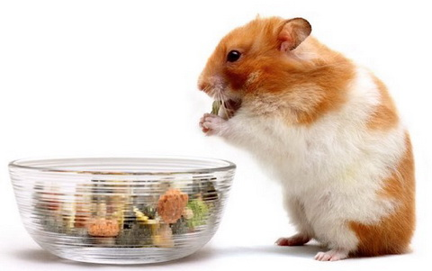
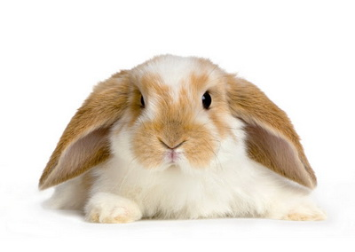
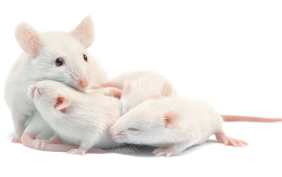
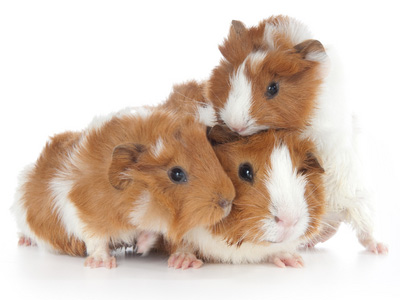

Mali Ljubimci
Hrčak

Hrčak je postao vemo popularan ljubimac poslednjih godina. Za one koji dugo nisu kući pa tek u večernjim časovima mogu da odvoje par sati sa ljubimcem, hrčak je savršen izbor. Pogodniji je za stariju decu koja se mogu adekvatno brinuti o njemu. Prosečni životni vek hrčka iznosi 2-3 godine. Ovo je jednostavna životinjica, laka za održavanje, vrlo vesela i inteligentna, u kojoj će cela porodica uživati. On vas neće ugristi, osim ako ga naglo ne probudite, povredite ili ga prekinete usred obedovanja. Hrčak je aktivniji noću nego danju. Sastavljanje jelovnika za ovu malu životinju ne zahteva naročit trud. Osnova hrane su žitarice i biljna hrana, uz dodatak koštunjavih plodova koje koriste za temeljno čišcenje i oštrenje zubića.
Kunić

Mekani, topli i neizmerno slatki, kunići spadaju u grupu omiljenih dečijih ljubimaca. Žive u proseku 10 godina, te zahtevaju posvećenost na duži period. Kunići su izuzetno društvena bića, te bi idealno bilo kada bi život pod vašim krovom proveli u društvu bar još jednog kunića. Razigrane su, vesele, pitome i inteligentne životinje. Vole da se maze. Ne vole, pak, mnogo da se podižu i nose okolo, iako vremenom i na to mogu da se naviknu. Higijena im je na prvom mestu, čistiji su čak i od mačaka. Nemaju miris. Ipak, obavezno je redovno seckanje noktiju, a morate im obezbediti i predmete sa kojima će se igrati i žvakati. Omiljena hrana im je seno, ali im treba davati i sveže povrće i bilje. Mogu se dresirati. Traže dosta pažnje i prostora.
Miš

Vrlo su interesantni za gledanje i nisu zahtevni za održavanje. Prosečan životni vek miša je dosta kratak, 1-2 godine. Pomalo im je ćudljiva narav, te ne vole mnogo da se uzimaju i nose, ali ako ih od početka na to navikavate, neće biti problema. Slobodno ih možete hraniti iz ruke, to će im prijati. Miševi su noćne životinje i uživaju u društvu, te ih je najbolje držati u grupi. Nega krzna je minimalna, jer miševi samostalno održavaju higijenu. Pri izboru miša koga ćete udomiti, gledajte da izaberete aktivnog, sa mekanim i čistim krznom i rozikastom kožom, jer su to znaci da je zdrav.
Morsko prase

Ova nežna životinjica je izuzetno društvena i uživa u interakciji sa vlasnikom. Prosečan životni vek morskog praseta je oko pet godina. Iako će najsrećniji biti u društvu još jednog morskog praseta, ovaj mali ljubimac može da se navikne i na samotnjački život, pod uslovom da mu se pruži dovoljno pažnje i ljubavi. Dugodlake vrste zahtevaju redovno održavanje krzna, dok kod kratkodlakih to nije slučaj. Ipak, u oba slučaja, redovna nega i skraćivanje noktića je obavezna. Nisu agresivne životinje, pogotovu ne prema ljudima. Ipak treba uzeti u obzir da su morska prasad plašljiva i da im treba prilaziti nežno, bez naglih pokreta. Uz pravilan pristup postaju prave maze koje prosto obožavaju svoje vlasnike. Osnovna ishrana morskih prasića sastoji se od sena, peletirane hrane i svežeg voća i povrća.